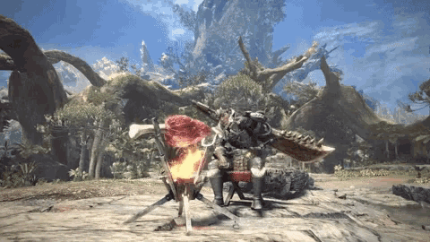
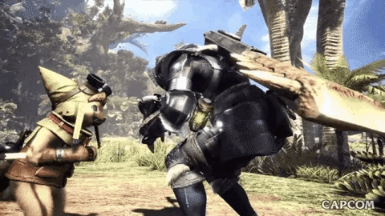
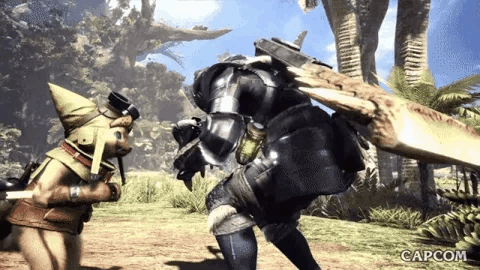
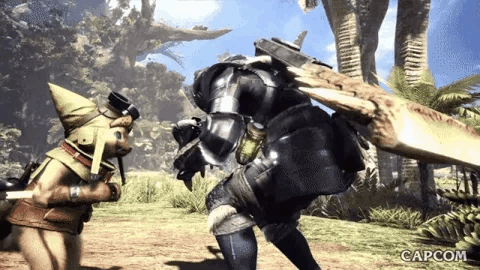
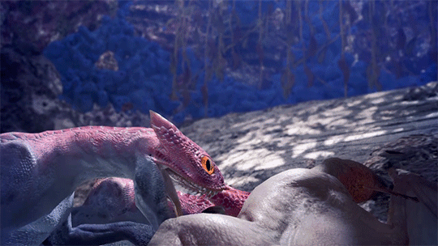
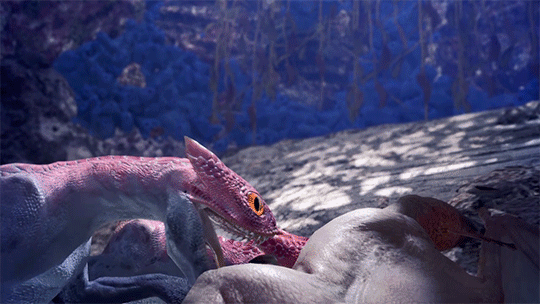

BOSQUE PRIMIGENIO
Adéntrate en el Bosque Primigenio de Monster Hunter World, un entorno vibrante y lleno de vida donde cada expedición es una experiencia única. Este vasto paraíso selvático combina frondosa vegetación, rutas ocultas y un diseño vertical que invita a la exploración estratégica. En sus diversos ecosistemas habitan criaturas imponentes como el voraz Gran Jagras, que devora a sus presas enteras, o el implacable Anjanath, capaz de desatar ataques de fuego letales. Aprovecha las trampas naturales, escala enredaderas y usa el terreno a tu favor para convertirte en el depredador supremo. Si buscas desafíos, emociones y la cacería más inmersiva, el Bosque Primigenio es tu destino.

 


 
